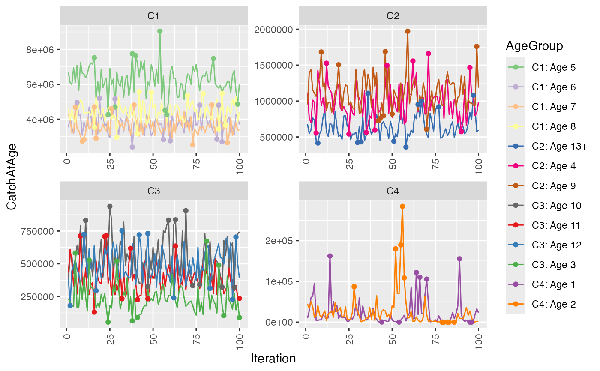

Plots the posterior distribution of parameters estimated with Reca. Useful to corroborate convergence of simulations.
The distribution is plotted in order of iterations, so that issues with autocorrelation in the simulation can be detected.
Autocorrelation issues may be addressed by adjusting the argument 'Thin' to ParameterizeRecaModels
The upper and lower quantiles of the distributions are highlighted, so that rare spikes or multi-modalities can be detected.
Rare spikes and multi-modalities can be addressed by adjusting the argument 'Burnin' to ParameterizeRecaModels
In order to provide an overview of many age-groups at once. Several panels are created and age-groups that
have closer mean values are plotted together. This is achieved with a k-means clustering (kmeans),
and some key parameters for the clustering algorithm is provided as options Nclust, Iter.max, Nstart,
Any grouping variables or length groups in 'RecaCatchAtAge' are incorporated into the age group definition. This tends to crowd the plots, and may make them unreadable. While it is desirable to ensure that the parameters has converged for all ages, grouping variables and length groups, it is often necessary to compromise. One may
- increase 'LengthInterval'
Default is to collapse length groups entirely
- adjust 'PlusGroup'
Reduces the total number of age groups
- adjust 'CatLimit'
which removes legends from the most crowded plots
- remove grouping variables
make additional estimates for the same parameterisation, with fewer grouping variables. See:
RunRecaModels
If 'LengthInterval' specifies only one length-group. Length groups will be removed from plot legends.
Additional convergence checks can be set up using several parameterisation runs and
the functions ReportRecaParameterStatistics and ReportParameterConvergence.
That analysis checks the convergence of model parameters, rather than the estimated parameters,
and supports handling a large number of model parameters, and filter out indications of non-convergence.
Usage
PlotPosteriorTraces(
RecaCatchAtAge,
Parameter = c("TotalCatch", "MeanLength", "MeanWeight"),
PlusGroup = integer(),
LengthInterval = numeric(),
UseDefaultPlotSettings = TRUE,
Nclust = integer(),
Iter.max = integer(),
Nstart = integer(),
LowerQuant = numeric(),
UpperQuant = numeric(),
CatLimit = integer(),
Legend = TRUE
)Arguments
- RecaCatchAtAge
Results from MCMC simulations (
RecaCatchAtAge).- Parameter
which parameter plot traceplots for "TotalCatch", "MeanLength", or "MeanWeight", Defaults to
- PlusGroup
If given, ages 'PlusGroup' or older are included in a plus group.
- LengthInterval
width of length bins in cm, for TotalCatch traceplots. If not provided, length inteval will be set to the maximum length group..
- UseDefaultPlotSettings
if TRUE default plot settings are used, rather than the values provided by Nclust, Iter.max, Nstart, LowerQuant, UpperQuant, CatLimit, and Legend
- Nclust
the number of plots to distribute the ages and plus group on. Defaults to 4.
- Iter.max
maximal number of iterations for k-means clustering deciding which ages are plotted in same plot. Defaults to 20.
- Nstart
the number of random sets chosen for the k-means clustering. Defaults to 10.
- LowerQuant
lower quantile in each age group to plot as points. Defaults to .
- UpperQuant
upper quantile in each age group to plot as points. Defaults to 0.95.
- CatLimit
the upper limit for number of ages in a plot using categorical coloring. Plots with more than this number of age greoups will use a gradient coloring scheme. Defaults to 30.
- Legend
If true legend will be plotted.
See also
Provide data for this plot with RunRecaModels
Examples
RstoxFDA::PlotPosteriorTraces(RstoxFDA::RecaCatchAtAgeExample, PlusGroup = 13)

RstoxFDA::PlotPosteriorTraces(RstoxFDA::RecaCatchAtAgeExample, PlusGroup = 13,
Parameter = "MeanWeight")